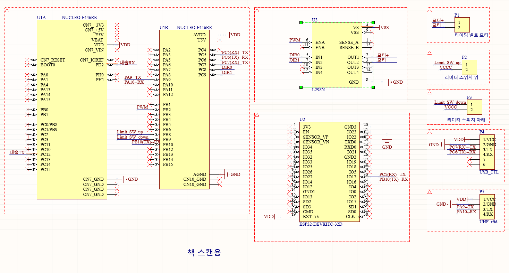

책의 위치와 대출을 연결하는 도서관 로봇
RFID 태그·위치 데이터를 서버로 전달하는 통신과 스캔·대출부 하드웨어를 맡았습니다.
팀 수상 · 2024 한국공학대전 총장상 · 캡스톤디자인 지역연계형 우수상 · 한이음 ICT멘토링 공모전 동상

나의 기여 · 통신과 실물 하드웨어
RFID 송수신·ESP32 서버 연동과 스캔·대출부 제작을 담당했습니다. Android 앱의 회원증·도서 확인 흐름도 구현했습니다. 담당 구현 보기 →
팀 시스템 · 이동부터 도서 확인까지
ROS 2 이동부가 책장으로 이동하면 모터·타이밍벨트로 RFID 스캔부를 움직입니다. 서버가 도서 위치를 비교하고, 객체인식·OCR이 청구기호를 확인합니다. 주행과 영상 인식은 팀원 구현 영역입니다.
연동 확인 · 태그 데이터가 서버에 도착하기까지
STM32에서 받은 태그·위치 데이터를 ESP32가 서버로 전송하는 구간을 UART 수신 기록과 HTTP 응답으로 확인했습니다. 아래 개인 발표자료에 통신 기록과 제작 과정을 담았습니다.
RFID 수신·서버 연동·기판 제작
책 정보를 읽는 회로를 제작하고, ESP32의 UART 수신과 Wi-Fi/HTTP 전송을 연결했습니다.


UART 수신과 HTTP 전송
장치 데이터가 서버까지 이어지는 통신 경로를 구성했습니다. STM32의 태그·위치 데이터를 UART로 받아 Wi-Fi/HTTP로 전달하고, RC522 회원카드 인식 후 대출·반납을 요청했습니다.
스캔부·대출부 기판 제작
스캔부와 대출부를 나누고 보드·RFID·모터 드라이버·리미트 스위치의 전원과 신호 배선을 구성했습니다. 회로를 실물 기판과 외관으로 제작해 장치 연동에 사용했습니다.
Android 앱과 사용자 조작
회원증 인식과 대출할 책 정보를 앱에서 확인하도록 구성했습니다. 센서에서 읽은 정보가 서버 처리와 사용자 확인으로 이어지도록 통신·하드웨어·앱의 접점을 맡았습니다.
RFID 인식 범위와 대량 수신 조정
한 번에 많은 태그가 읽히는 상황에서 인식 범위와 통신 속도를 조정하고, 구간별 응답을 확인했습니다.


인식 범위 · 스캔할 책에 맞춰 조정
조치 UHF RFID의 읽기 거리를 스캔 범위에 맞춰 조정했습니다. 센서 자료의 RF 출력 설정 명령을 확인하며 인식 범위를 다뤘습니다.
대량 수신 · 데이터량에 맞춘 통신 속도
문제 한 번에 많은 태그가 읽혀 통신 속도 조정이 필요했습니다. 조치 유입되는 데이터량에 맞춰 속도를 조정하고, ESP32 연동 구간의 수신 데이터를 확인했습니다.
검증 · UART 수신과 HTTP 응답
확인 개인 발표자료에 UART 수신과 서버 HTTP 응답 화면을 남겼습니다. 센서·MCU·서버를 구간별로 확인한 경험입니다.최종 RF 출력·실측 거리와 처리량·유실률의 전후 수치는 별도 기록이 없습니다.